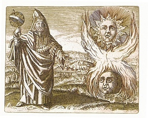

Sacred Texts Esoteric
Buy this Book at Amazon.com
|

Hermes Trismegistus [1624] (Public Domain Image) |
Hidden Treasures of the Ancient Qabalahby Elias Gewurz[1918] |
This is a short treatise by a western, esoteric writer of the early 20th century. If you are looking for concrete information on the Kabbalah, or authoritative texts on that subject, please refer to the Kabbalah section of the Judaism page. The author speaks in very general terms, referring most often to Alchemy, Yogic and mystical Christian concepts, and only vaguely alluding to the Kabbalah.
As is the case with numerous books issued by the Yogi Publication Society during this period, the actual author of this book may be the prolific William Walker Atkinson. This hypothesis is supported by the tone and content of this work, which are similar to his other books.
Also at this site is Mysteries of the Qabalah, likewise under the byline of Gewurz.